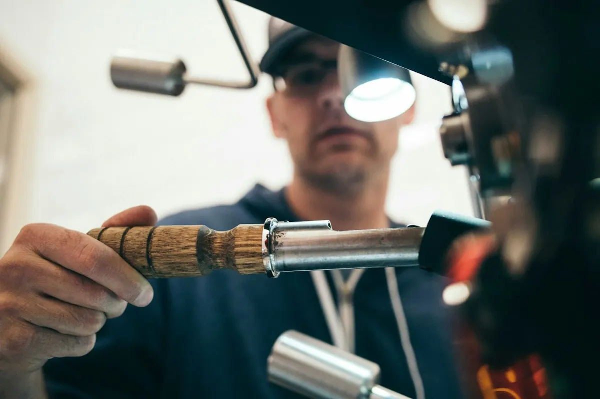

Why Bristol's Weather Is the #1 Enemy of Your Car's Paintwork

Bristol gets over 1,200mm of rain a year — well above the UK average. For anyone who takes pride in their car, that's not just a weather forecast. It's a constant, year-round attack on your paintwork. And rain is only part of the story.
What Bristol's Climate Does to Your Car's Paint
Most drivers assume a regular rinse is enough to keep their car protected. The damage from Bristol's weather doesn't come from rain itself — it comes from what the rain carries, and what it leaves behind when it dries.
Acid rain contamination is a significant issue in any urban environment. Bristol sits downwind of industrial activity, and rainwater falling through polluted air picks up acidic compounds. When that water evaporates on your bonnet or roof, it deposits those acids directly onto the clearcoat. Left there, they etch through the protective layer and expose the colour coat underneath — causing dullness, milky patches, and eventually permanent surface damage.
Winter road salt runs from October through to March across Bristol's roads and motorways. Salt is highly corrosive. It bonds to paint, trim, rubber seals, and the underbody — accelerating rust and oxidation in areas that are difficult to inspect and even harder to treat once damage sets in.
Tree sap and organic contamination are a particular hazard in Bristol's tree-lined streets and residential areas. Horse chestnuts, lime trees, and planes all drop sticky sap that bonds to paint within hours of contact. Once baked by even modest sunshine, this sap can permanently etch into the clearcoat if it isn't removed promptly with the correct products.
The Real Cost of Doing Nothing
Paint damage compounds. Surface contamination that isn't regularly removed becomes bonded grime. Bonded grime leads to paint oxidation. Oxidation causes the kind of dullness that can only be addressed with machine polishing — and if that stage is skipped, the next step is a full respray.
The financial difference is stark. Keeping on top of your car with a regular professional valet every 6–8 weeks costs a fraction of the paint correction work that neglect eventually makes unavoidable. Our full packages guide explains the different levels of treatment and what each one addresses.
What a Professional Mobile Valet Achieves That You Can't Do at Home
A bucket wash or a pressure rinse will shift surface dirt. What it won't do is remove the bonded contamination that's causing real, long-term damage. A professional valet session at ADZ Valeting includes:
- Pre-wash decontamination: Traffic film remover and iron fallout treatment break down bonded contamination before anything touches the paint surface.
- Clay bar decontamination: Removes embedded particles — industrial fallout, rail dust, brake dust — that a standard wash cannot shift regardless of pressure.
- Safe wash technique: Two-bucket method with pH-neutral, paint-safe shampoo. No sponges. No swirl marks.
- Protection application: A high-quality wax or synthetic sealant creates a hydrophobic barrier. Rain sheets off cleanly rather than sitting on the surface and contaminating it further.
How Frequently Should You Book in Bristol?
For a daily driver kept outside, every 6–8 weeks is the practical standard. During winter — November through February — shortening this to every 4–6 weeks will counteract the accelerated salt damage from gritted roads.
If you park under trees, add a mid-cycle rinse when sap starts to appear in spring. If your car sits in a garage overnight, you have a little more flexibility — but the road salt issue remains regardless of storage conditions.
For longer-term protection that reduces the frequency of intensive work, our Diamond Detailing package is specifically designed with this in mind — it includes full decontamination, multi-stage preparation, and a protective coating that significantly extends the effective protection window.
We Come to You — Across All of Bristol
ADZ Valeting is a fully mobile service. We come to your home, your workplace, or wherever your car is parked — no waiting rooms, no drop-offs, just professional results delivered around your schedule.
We cover Bristol city centre, Clifton, Redland, Southville, Bedminster, Bishopston, Fishponds, Kingswood, Keynsham, Bath, and all surrounding areas.
Ready to give your car the protection it needs? Book directly online or message us on WhatsApp and we'll get back to you the same day.